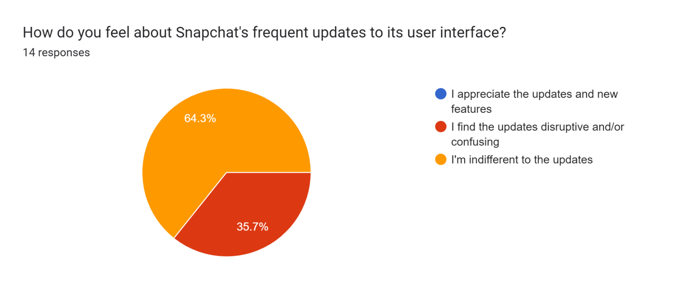
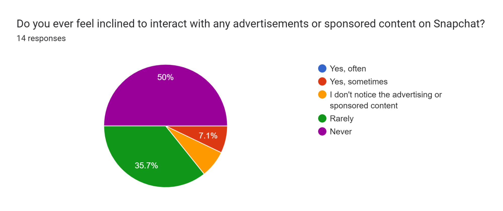
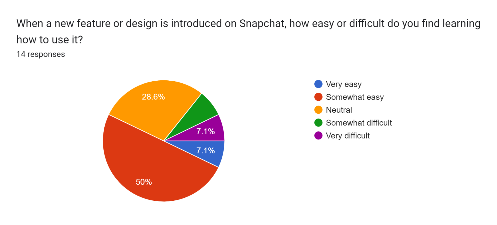
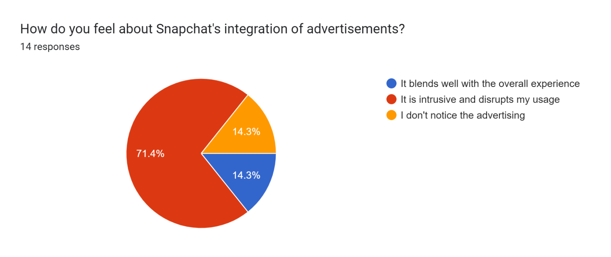
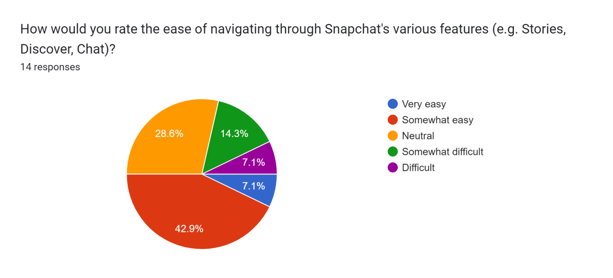
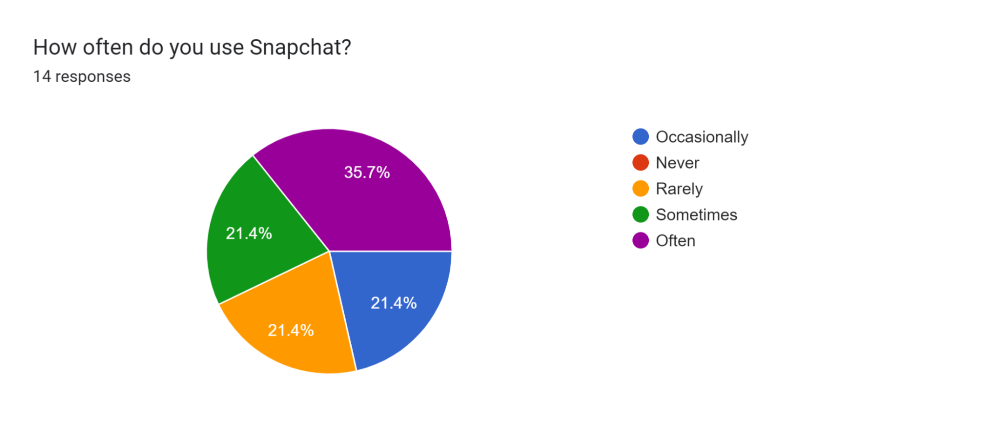

Research
Overview
The next step of the process was to perform research as well as carry out some type of study to survey the opinions and experiences of other people
The Snapchat application has several UI issues, including privacy, navigation, and advertisements. In order to further understand these issues, we conducted research using a survey along with an observational study of individuals completing several tasks in the application.
Protocol:
For the survey, we reached out to friends to fill out our Google Form survey since a majority of the Snapchat audience is teens/young adults around our age. The survey consists of 7 Likert-scale questions and 2 open response questions.
For the observational study, a set of a few users were assigned different tasks such as navigating through the filters page and watching through a whole 'news' story.
UX Audit Notes
Obtain a PDF copy of the notes here.Survey and Results
Each of the participants of this study was given a survey on Google Forms to fill out and gather information.
The following images showcase the question as well as the set of answers given:
     From our findings we can see that when it comes to advertisements the majority of the participants can agree (71.4%) that snapchat's ads are intrusive and ruin the experience. This is something that should be worked on to improve the user experience.
That being said, what we found somewhat surprising is that a lot of people are fine with the app's navigation setup. This means that while the navigation may not be perfect, most students have no problem with it at all, contrary to our predictions.
Observational Study and Results
When it came to the observational study, we had the set of users go through one of two cases. They either had to find a specific filter or watch a 'news' story of their liking for as long as they wanted.
When it came to searching for filters, everyone went about it a different way and would pick a filter that was similar to the rest of the participants, but not the exact same one. We believe this is due to the poor design of the filter search and categorization. It just recommends something else each time, and oftentimes it may not even be what the person is looking for.
Finally with the news story watching, each of the users tapped through the news story of their choosing, but as soon as they reached their third or fourth unskippable ad, they just gave up and left the story. On average this occured two ads in. This portrays the fact that the ads do bother people enough to the point where they are not happy with the experience it provides.